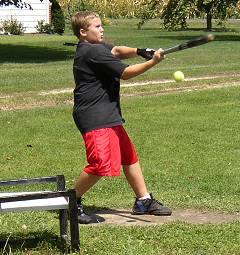
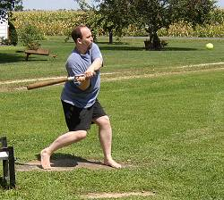

Jonathan Miller and Paul Alf prepare for Saturday's doubleheader. It was the first time the two rivals had gone head-to-head. Both players won once and lost once leaving the rivarly undecided. |
Tony Cork pitched valliantly in the opener but lost again despite allowing just 2 runs in 11 innings. Cork fell to 1-3 on the year despite a 1.75 ERA. |

Evan Woodard was 5-for-28 in the doubleheader and was on the winning side both games. His catch in the 8th inning of game one helped secure the win for Paul Alf. |
Paul Alf was brilliant in the first pitching performance of his short career. Alf threw all 11 innings shutting out the opposition while allowing just 8 hits - all singles. |

Jonathan Miller finally got going in the second game of the doubleheader to finish the day 11-for-29 with a double, triple and homerun. He was 8-for-15 with 3 RBI and 4 runs scored in the nightcap. |
Paul Alf rips a leadoff double in the top of the 11th inning of game number one as he later scored the go-ahead run on Patrick Cork's homerun. Alf finished the doubleheader 5-25 and is now hitting .327 in his career. |
Patrick Cork followed up Alf's shutout with one of his own in the second game of the doubleheader. Cork allowed 5 hits and struck out 12 in the 8-0 win.
|
Jake Hoalt ran into trouble early in the second game on Saturday allowing 5 runs over the first 4 innings. He eventually settled down, but took the loss as he finished with 8 runs allowed in 8 innings of work.
|
Patrick Cork broke out of his early season slump going 16-for-30 in the doubleheader including 3 doubles, 3 triples, 2 homeruns and 7 RBI as his team came out on top in both games.
|